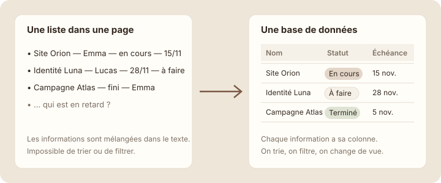

Pourquoi une base
À la fin de cette leçon, tu sauras reconnaître une information qui gagne à être rangée dans une base de données plutôt que dans une page.
Étape 1 : comprendre
Pour l'instant, la page « Projets » de Studio Nova est vide. Emma pourrait y écrire une simple liste : « Site Orion — Emma — en cours — 15 novembre ». Ça marche pour trois projets. Mais à vingt projets, comment savoir lesquels sont en retard ? Lesquels sont à Lucas ?
C'est là qu'intervient la base de données. Une base de données, c'est une collection d'éléments du même genre (des projets, des tâches, des clients…), décrits chacun par les mêmes informations : un statut, un responsable, une échéance.
Visuellement, une base ressemble à un tableau Excel : une ligne par élément, une colonne par information. Mais elle fait beaucoup plus :
- elle trie et filtre en un clic : « seulement les projets en cours » ;
- elle s'affiche de plusieurs façons : tableau, colonnes de suivi, calendrier (module 5) ;
- chaque ligne est une vraie page, où l'on peut écrire (leçon suivante).

Une base de données est une collection d'éléments du même genre, décrits par les mêmes informations.
Astuce : un bon indice : si tu te surprends à écrire la même structure ligne après ligne (« nom — personne — date »), c'est qu'il te faut une base.
Page ou base chez Studio Nova
Chez Studio Nova, plusieurs choses se répètent. Voici ce qui mérite une base, et ce qui reste une simple page.
| Reste une page | Devient une base |
|---|---|
| Le mot de bienvenue de l'accueil. | Les projets de l'agence : nom, client, statut, échéance. |
| Les règles de l'espace, écrites une fois. | Les tâches : à faire, responsable, date. |
| La présentation de l'équipe. | Les comptes rendus de réunion : date, participants, projet. |
| Une procédure qu'on lit du début à la fin. | Les ressources : type, sujet, lien. |
La règle : une page se lit, une base se consulte, se trie et se met à jour. Dans ce module, tu crées la première base de Studio Nova : « Projets ».
Base ou page ? À toi de trier
Pour chaque besoin de Studio Nova, choisis : base de données ou simple page ?
Exercice · dans Notion
Repère les bases dans ton travail
- Prends une feuille ou ouvre une page Notion « Brouillon ».
- Note trois listes que tu tiens aujourd'hui dans ton travail (un tableau Excel, un carnet, des e-mails…).
- Pour chacune, écris les trois ou quatre informations qui reviennent à chaque ligne.
Résultat attendu : trois listes, chacune avec ses informations récurrentes. Par exemple : « Demandes clients : client, date, sujet, traité oui/non ». Chacune de ces listes ferait une bonne base de données.
Étape 4 : vérifier
À retenir
- Une base de données est une collection d'éléments du même genre, décrits par les mêmes informations.
- Elle permet de trier, filtrer et afficher les éléments de plusieurs façons.
- Une page se lit ; une base se consulte et se met à jour.
Choisis une réponse avant de valider.
Dans une page, tout est du texte libre. Une base range le responsable dans sa propre colonne, qu'on peut ensuite filtrer.
Choisis une réponse avant de valider.
Le mot d'accueil se lit une fois. Les factures et les tâches se répètent et se suivent : ce sont des bases.